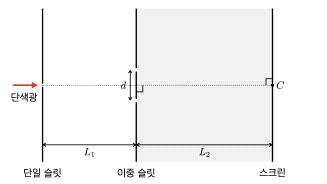

문제 2
아래 그림처럼 슬릿 간격이 \(d\)인 이중 슬릿이 설치되어 있다. 이중 슬릿의 중심으로부터 왼쪽으로 거리 \(L_1\)만큼 떨어진 곳에 단일 슬릿이 놓여 있고, 오른쪽으로 거리 \(L_2\)만큼 떨어진 곳에 스크린이 놓여 있다. 스크린 위 점 C는 이중 슬릿의 가운데와 단일 슬릿을 잇는 일직선 상에 위치한다. 이때 파장이 \(\lambda\)인 단색광이 단일 슬릿을 왼쪽에서 오른쪽으로 통과하고 스크린 위에 무늬를 만든다. \(L_1\)과 \(L_2\) 모두 \(\lambda\) 및 \(d\)보다 훨씬 크다고 가정하며, 모든 영역은 진공 상태이다. 단일 슬릿, 이중 슬릿, 스크린은 서로 평행하다.

(1) 점 C로부터 첫 번째 이웃한 밝은 무늬의 중심까지의 거리를 구하시오. [1점]
(2) 단일 슬릿과 단색광이 함께 아래 방향으로 속도 \(v\)의 등속도 운동을 시작했다. 이 경우, 문제 (1)에서 점 C에 나타났던 밝은 무늬가 움직이는 방향과 속도의 크기(\(v_x\)), 그리고 이웃한 밝은 무늬 사이의 간격(\(\Delta x\))을 구하시오. 단, 빛의 도플러 효과는 무시한다. [2점]
(3) 문제 (2)의 상황에서 이중 슬릿과 스크린 사이 영역을 굴절률 \(n\)의 매질로 채웠을 때, \(v_x\)와 \(\Delta x\)를 구하시오. [2점]